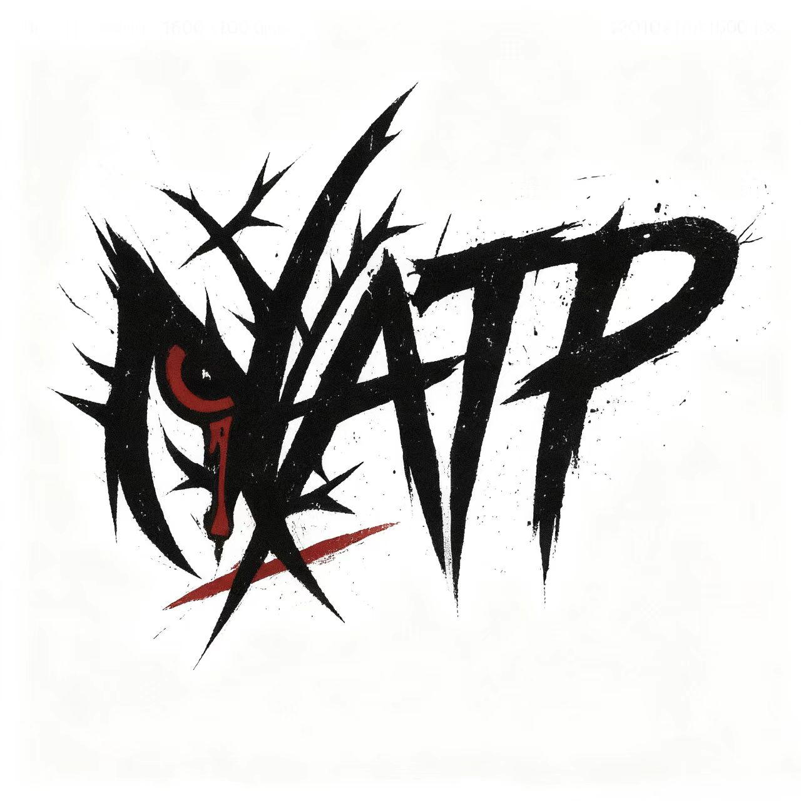
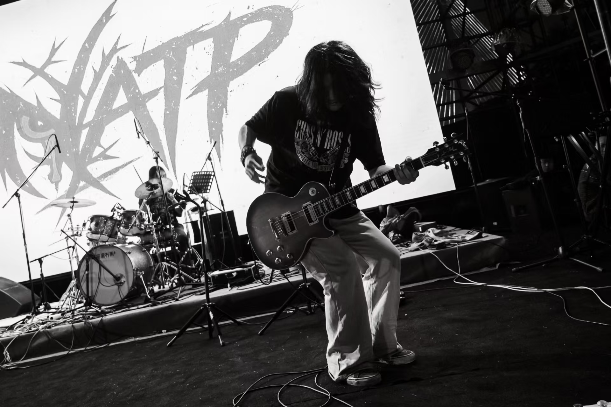
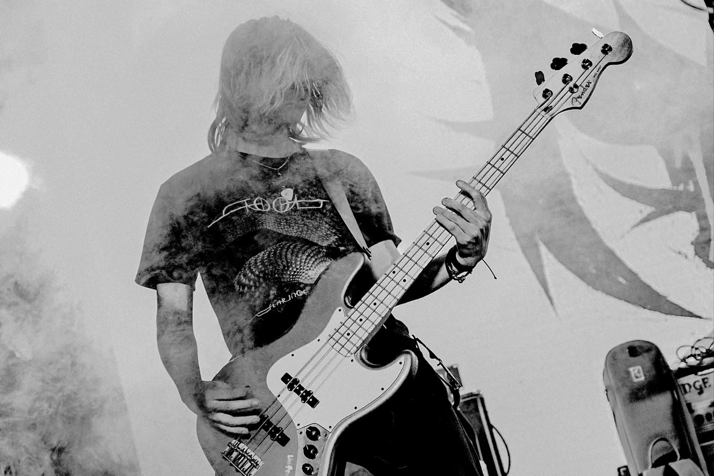
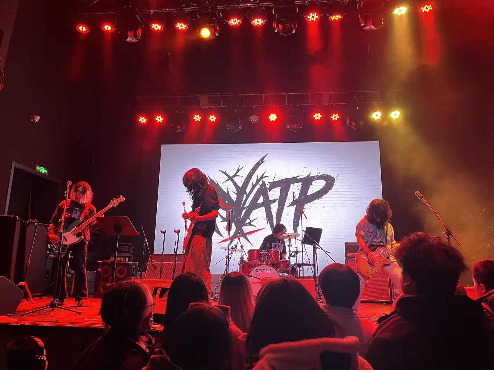
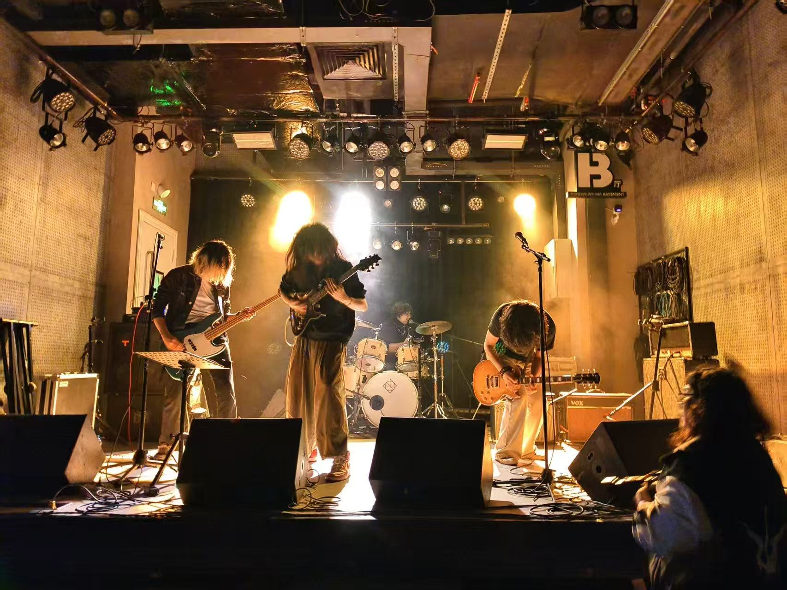
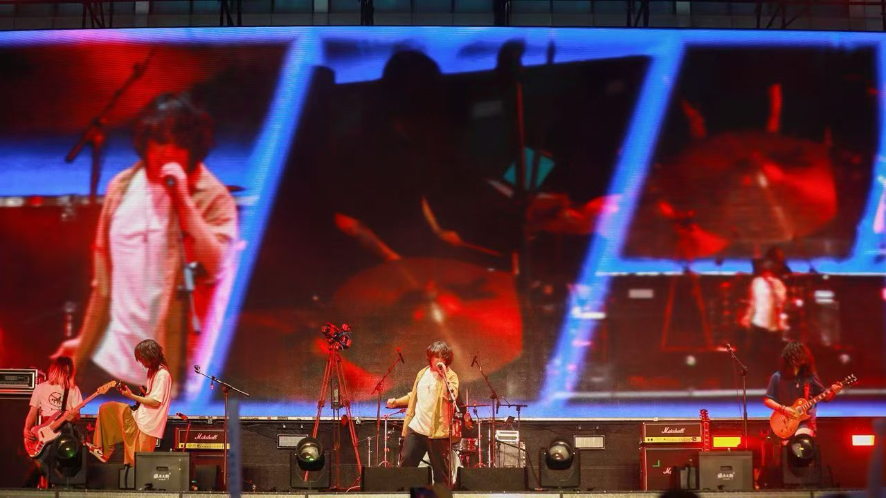
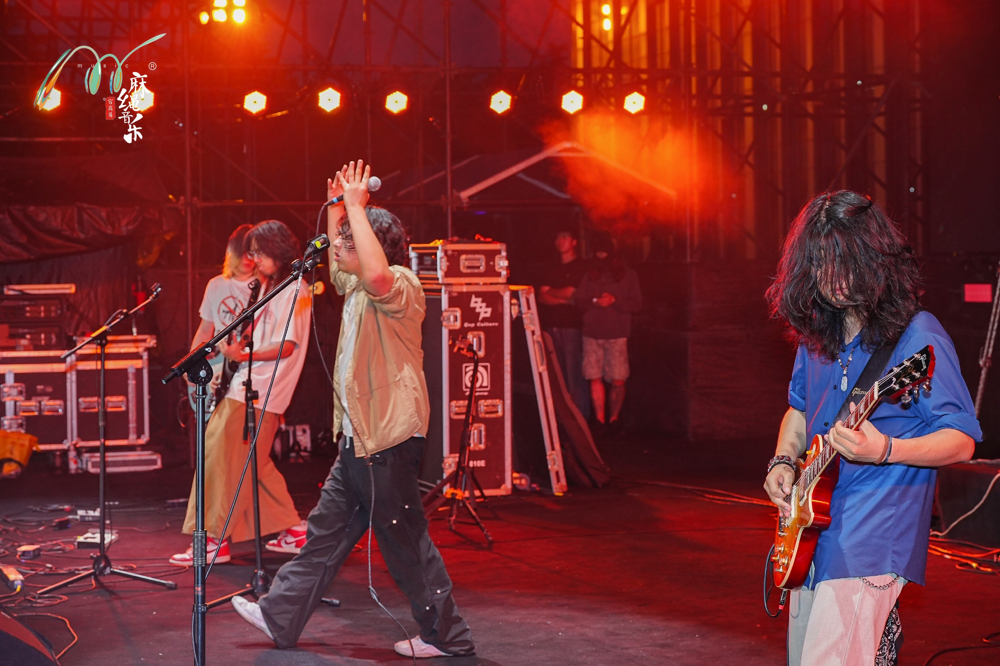
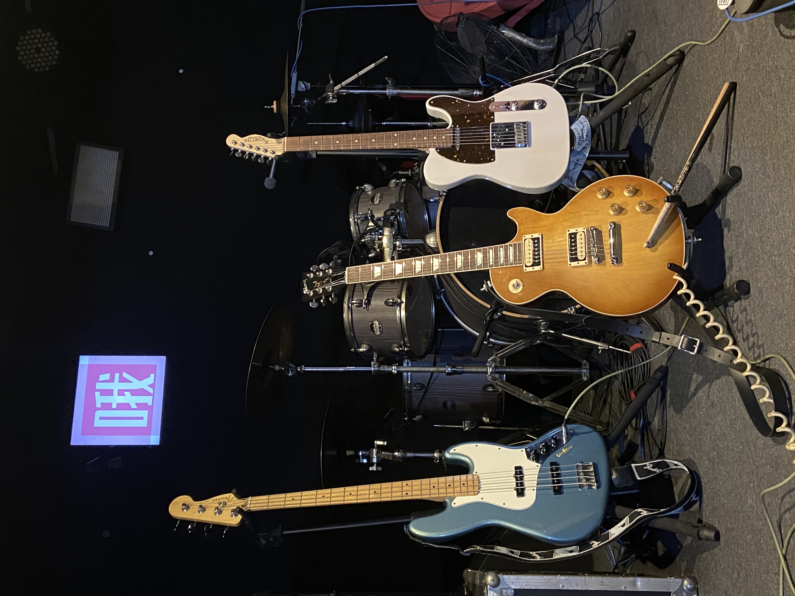
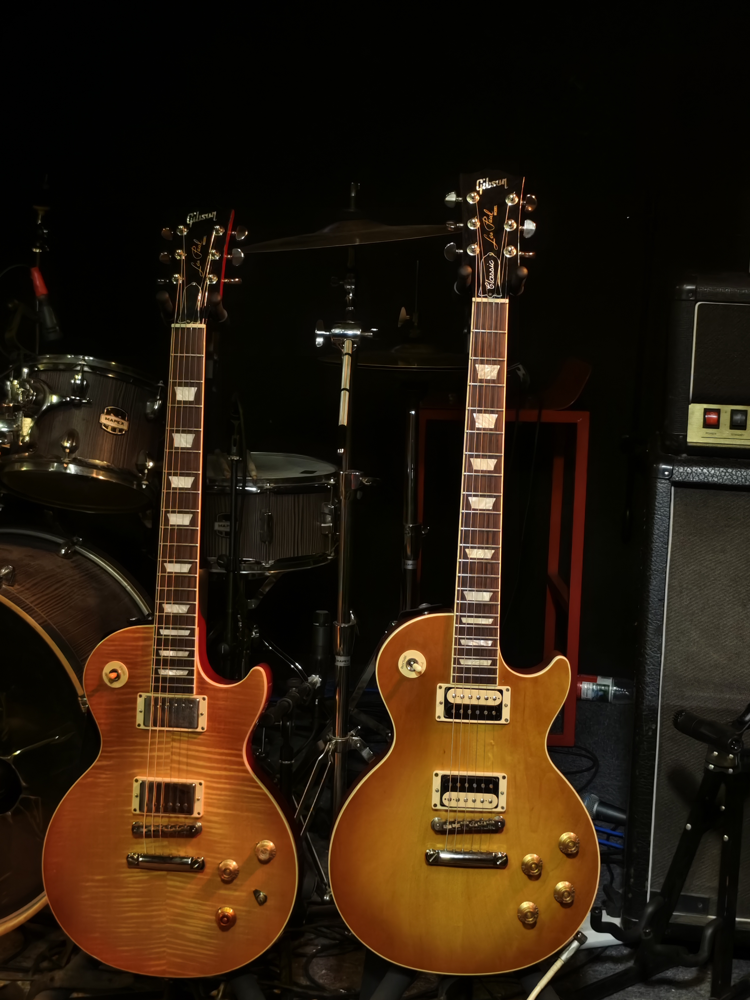
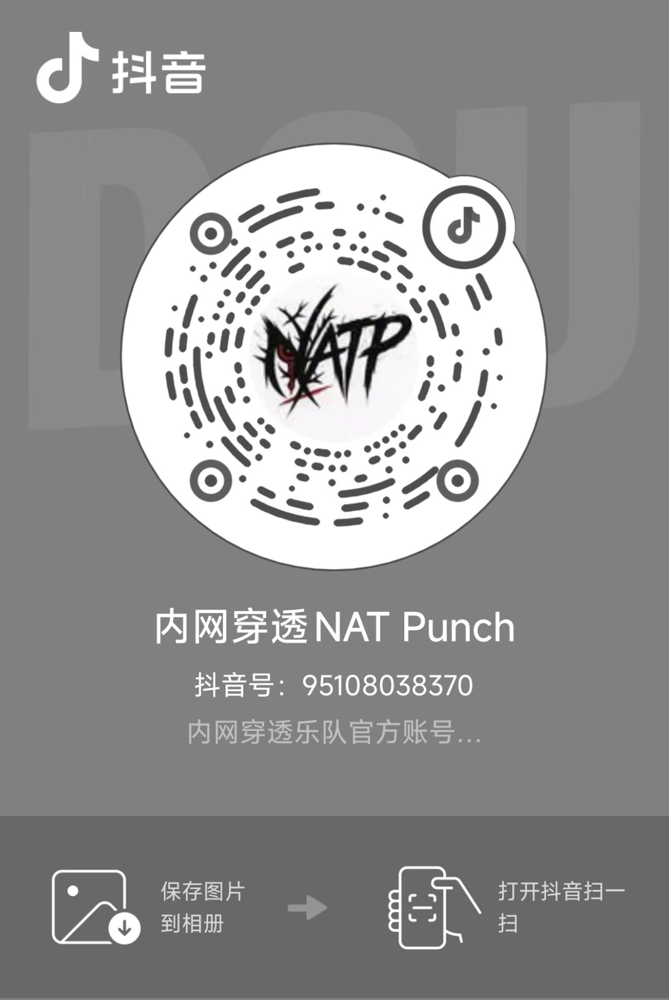

01
Vocal
Ricky
词曲创作与现场核心表达，受 Guns N' Roses、窦唯等音乐影响，擅长以直接的旋律和强烈的舞台表现传递情绪。

NATPNATP / Official EPK · Xi'an, China
穿透全世界
用吉他啸叫掀翻屋顶，用鼓点砸碎沉闷 我们只提供一种东西 想把音量拧到头的摇滚肾上腺素 穿透！
About Band
01 / Who We Are
内网穿透 NATP 成立于 2025 年夏天，来自西安。乐队以硬朗的吉他声、直接的旋律表达和高能量现场为核心，融合 Thrash Metal、Hard Rock、Blues Rock、Metalcore 等元素，形成粗粝、直接、情绪密度高的声音质感。
我们关注情绪、孤独、困境与自我突破。NATP 不把摇滚当作背景音乐，而是把每一次现场当作一次真实的情绪释放，我们来到这里只为一件事——穿透！
02 / Sound Keywords
NATP ／ Line Up
词曲创作与现场核心表达，受 Guns N' Roses、窦唯等音乐影响，擅长以直接的旋律和强烈的舞台表现传递情绪。

负责词曲创作与现场核心表达，受 Guns N' Roses、Oasis、Nirvana 等音乐影响，擅长以直接的旋律和强烈的舞台表现传递情绪。
负责节奏铺底与和声填充，演奏风格精准有力，与主音吉他形成呼应，为现场提供厚实的音墙基础。

负责低频律动与歌曲骨架，演奏风格稳重、有推动力，为现场提供扎实的节奏支撑。
负责现场节奏能量与动态变化，演奏风格强劲，强调爆发力与情绪推进。
Music / Live
Original Works / 部分原创曲目
旋律直接、现场爆发力强，是 NATP 第一首正式发布作品。
高速节奏与紧凑推进的激流金属作品，适合现场制造直接冲击。
带有律动感与摇摆感的现场型作品。
以直接旋律切入情绪的现场型曲目，制造合唱与情绪爆发。
一首关于成长困境、自我挣扎与夜晚情绪的摇滚作品。
以克制情绪和旋律推进展开，情绪型作品。
Classic Rock Live Cover Set / 经典摇滚翻唱曲目
根据现场主题、演出时长与活动氛围进行编排，覆盖经典硬摇滚、Alternative Rock 与高能现场曲目，适合摇滚拼盘、校园活动、Livehouse 主题现场与开场暖场。
Photos











Live History / Booking
Past Shows / 已完成演出
Live Data / 数据可视化
演出城市：西安、上海、宜昌。统计为当前乐队最新公开 EPK 数据。
Booking Contact
